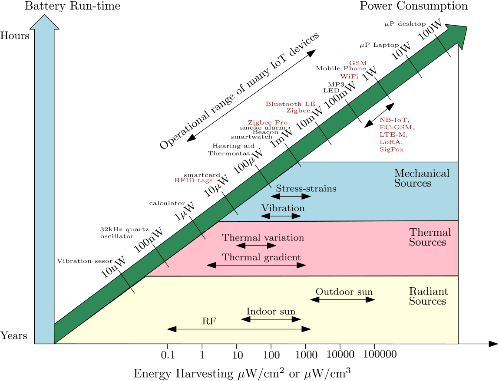
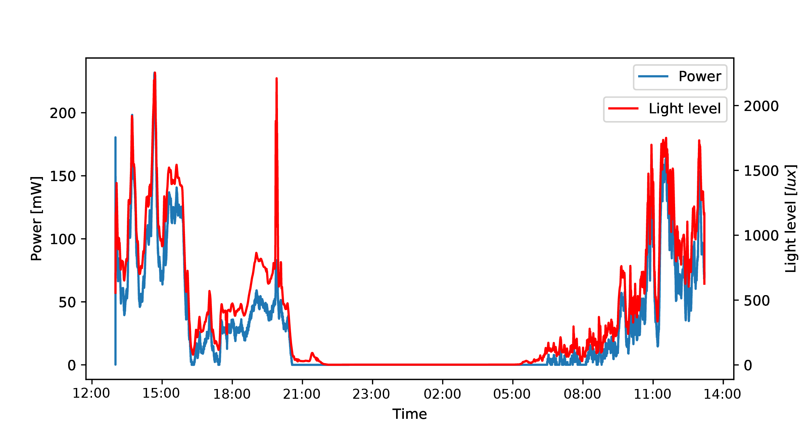
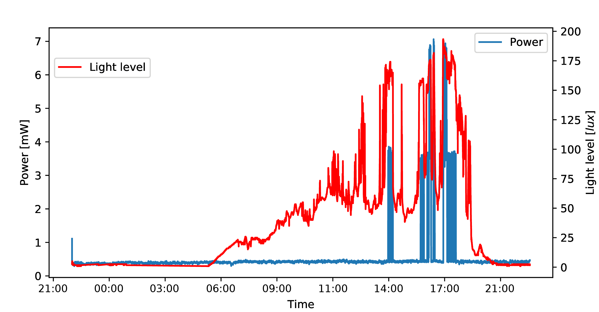
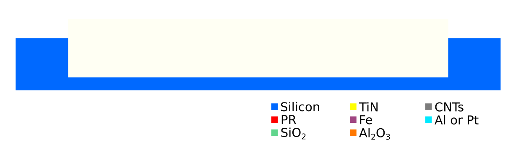
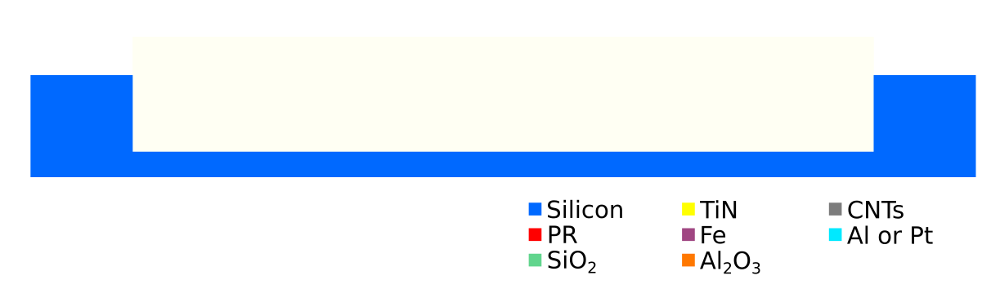

Carbon Nanotubes Based Supercapacitors for Autonomous IoT Sensing Nodes
Jérémy Jayet
Supervisors:
Dr. Clara MoldovanDr. Francesco Bellando
Professor:
Adrian IonescuContext of the project
Nowadays, there is an increasing need for electrical power storage options with a particular focus on environment-friendly devices.
In parallel, the number of connected devices increases, especially that of smart sensors for the IoT. Maintenance of remote networks with a high number of nodes is difficult and costly therefore long lifetime and autonomous operations are strongly desired.

Project goal
This work includes itself in an ambitious project aiming to develop a new generation of supercapacitors.
The desired properties are:
- High energy density
- High power density
- Environment-friendly fabrication, in particular based on abundant and non-toxic materials
- Low-cost
The application of these devices in IoT sensors is investigated.
Plan of the project
Beginning of the project
Review of the literature on supercapacitors and carbon nanotubes growth.
Characterization of the current samples. Electrical parameters of the Fe-Al2O3 stack are measured.
Research and development of new processes of fabrication.
Investigation of the harvesting platform and its properties.
Different process flows are proposed.
Francesco starts the microfabrication of the samples in the CMi cleanroom.
Following different experiment designs, the harvesting platform is characterized.
The demonstration sensor node is characterized.
We start planning the next step of the project, based on this work.
Autonomous IoT sensing nodes
Energy harvesting
Autonomous IoT sensing nodes
Energy harvesting system

This project is about designing the energy storage structure (in our case a supercapacitor).
Framework for autonomous operations
We need to describe the power production and consumption of an **energy harvesting system** and its load. The power produced by the energy harvesting system is defined as $P(t)$ and is a $(\rho,\sigma_1, \sigma_2)$ function.
Framework for autonomous operations
$(\rho,\sigma_1, \sigma_2)$ function
A nonnegative, continuous and bounded function $P(t)$ is said to be a $(\rho,\sigma_1, \sigma_2)$ function if, and only if, for any value of finite positive real numbers $\tau$ and $T$, the following conditions are satisfied:
\[ \int_{\tau}^{\tau+T} {P(t)dt} \leq \rho T + \sigma_1 \] \[ \int_{\tau}^{\tau+T} {P(t)dt} \geq \rho T - \sigma_2 \]Framework for autonomous operations
Energy neutrality
In a system where the energy production is characterized as a $(\rho_1,\sigma_1,\sigma_2)$ function, the load consumption is characterized by a $(\rho_2,\sigma_3)$ function and the energy buffer can be described with $\eta$ for the storage efficiency and $\rho_{leak}$ for the leakage power, the energy neutrality is met if the system respect the following conditions:
\[ \rho_2 \leq \eta\rho_1 -\rho_{leak} \] \[ B_0 \geq \eta \sigma_2 + \sigma_3 \] \[ B \geq B_0 \]Framework for autonomous operations
Design of the supercapacitors
Energy in a capacitor:
\[ E_C(V_C) = \frac{1}{2}C(V_C^2-V_{node,min}^2) \]Capacitance required for energy neutrality:
\[ C \geq \frac{2(\eta \sigma_2 + \sigma_3)}{V_{eh,max}^2-V_{node,min}^2} \]Experiment 1: Charging a capacitor
The power output was estimated by measuring the timing for charging a supercapacitor.
Experiment 1: Charging a capacitor
Results
+ Thermal power was evaluated with the **hot side of the TEG on the skin** and the cold side on the passive radiator. + In the outdoor scenario, measurements were made under direct sunlight. + In the indoor scenario, the solar cell was exposed to high artificial illumination.
Experiment 2: Long-term monitoring of an energy harvester
In this experiment, power production is recorded over time. The voltage and the current are sampled with an Arduino Nano and data are recorded on a μSD card. Analysis of this signal was then conducted to characterize the power production.
Experiment 2: Long-term monitoring of an energy harvester
Results of the outdoor scenario
Experiment 2: Long term monitoring of energy harvester
Results of the outdoor scenario
$\rho$ = 0.0289 mW $\sigma_1$ = 822.502 mJ $\sigma_2$ = 566.450 mJ
Experiment 2: Long-term monitoring of an energy harvester
Results of the indoor scenario
Principle of supercapacitors
Electrical double-layer capacitors
Electrical double-layer capacitors principle is based on non-Faradaic charge transfer.
\[ C = \epsilon \frac{A}{d} \]They benefit from: + a large surface area (activated carbons, CNTs), + an extremely thin double-layer distance (few Å).
Principle of supercapacitors
Electrochemical pseudocapacitance
Electrical energy is stored through reversible Faradaic redox reactions. Magnitude of this effect exceeds the effect of double-layer capacitance (up to a factor 100 was reported).
Properties of supercapacitors
Advantages: + Very high cycling stability and long lifetime (>10'000 cycles for most commercial devices). + High power density + Some devices are made with environment-friendly materials Current issues: + Low voltage + Low energy density + Most devices use toxic electrolyte
Novel approach for carbon nanotubes based supercapacitors
Two major improvements are explored in this project:
- Geometry optimization of the device
- New fabrication processes with horizontal carbon nanotubes
Process 1
Horizontal growth of CNTs on Al2O3 structures
Process based on the method developed by Guerin et al.
Advantages:
- Already done in CMi.
- Low resistivity (1.75 m$\Omega$cm)
Disadvantages:
- Not easily scalable (problem with Al2O3 deposition)
- Not lowest contact resistance ($45\cdot10^{-3}$$\texttt{m}\Omega\texttt{cm}^2)$
Process 1

Silicon test wafers stock-out
TiN sputtering 100 nm
Al2O3 sputtering 300 nm / 1um
TiN sputtering 100 nm
PR coating
Photolithography
TiN and Al2O3 etching (IBE)
PR stripping
Fe deposition
CNTs growth
Process 1
Microfabrication
+ Steps 1 to 9 were conducted (no CNTs growth). + Sputtering is very slow and is a limiting factor for scalability. + IBE of Al2O3 is difficult with respect to PR.
Process 2
Horizontal growth of CNTs on coated Si structures
Process 2
Horizontal growth of CNTs on coated Si structures
Coating of the horizontal surfaces could be achieved by two means with IBE: 1. Fe layer is the top layer and this layer is removed with IBE 1. Al2O3-Fe stack is etched with IBE and redeposits on the walls
Process 1
Horizontal growth of CNTs on coated Si structures
Advantages:
- Simple in-situ process
- Scalable
Disadvantage:
- New process which feasibility and characteristics were not demonstrated yet.
Process 2
 

Silicon test wafers stock-out
PR coating
Photolithography
Si etching
PR stripping
SiO2 growth
TiN sputtering
Fe deposition
Al2O3 sputtering
IBE and local redeposition
PR coating
Photolithography
Metal etching
PR stripping
CNTs growth
Process 3
Liquid-induced flipping of CNTs
The third approach for building horizontal CNTs structures is based on the assembly of vertically grown CNTs structures. This is achieved by liquid-induced flipping of the CNTs bundles on the chip.
Process 3
Feasability assessment
Process 3
Feasability assessment
Process 3
Feasability assessment

What comes next?
For supercapacitors development
- Proceed with the microfabrication of the devices in order to assess their feasibility and evaluate their characteristics.
- Choose the fabrication process based on its characteristics and scalability.
- Optimize the process to achieve the best performances.
- Implement deposition of MnO2 on the electrode to improve energy density.
- Package the device.
What comes next?
For autonomous sensor nodes
- Build a demonstration setup with monitoring of energy production and consumption.
- Evaluate the efficiency of the harvester and find strategies to improve it.
- Evaluate the efficiency of sensor nodes at performing a given task and improve it by developing energy aware nodes.
Conclusion
+ Based on current state-of-the-art on supercapacitors and CNTs fabrication, new fabrication processes were elaborated and are currently carried out in the cleanroom. + A framework to design supercapacitors for autonomous smart sensor nodes was developed with techniques to characterize energy harvesters and node power consumption in field conditions.
Thank you for your attention!
Your questions are welcome.